Two platforms,
one trusted system
Kairo answers a deceptively simple question: how can a marketplace turn fragmented operational activity into a trusted system for commerce, financial reporting, customer intelligence, and data-quality monitoring? The answer is two tightly-interlocked halves — an operational app and an analytical platform — that continuously exchange data with each other.
Operational Marketplace
A real, working e-commerce application — not a demo shell. Full storefront, auth, cart, checkout, and admin intelligence.
- Next.js 16 storefront with React 19
- FastAPI REST layer, JWT + Argon2 auth
- PostgreSQL 16 transactional store
- Customer event tracking for funnels
Analytical Platform
A medallion-architecture warehouse fed by large-scale synthetic data and a purpose-built chaos engine.
- 16M+ records across 9 entities
- Bronze → Silver → Gold dbt layers
- DuckDB + Parquet storage
- Governed GMV & reconciliation
ML + Observability
Point-in-time churn prediction with temporal validation, plus a persisted operational data-quality system.
- 4 temporal snapshots, 547K rows
- Out-of-time ROC-AUC 0.7757
- Risk deciles + retention actions
- 16 persisted quality checks
What Kairo is trying to achieve
The fictional company "Kairo" is a 5-year-old global marketplace facing a real strategic tension: growth decelerating from 45% to 30% YoY, with investors now demanding margin discipline. Every dashboard, metric, and model in the platform traces back to one of these objectives.
| # | Objective | Target | Served by |
|---|---|---|---|
| O1 | Grow GMV with improving unit economics | 30%+ YoY · margin ≥ 12% | mart_gmv_daily WBR |
| O2 | Improve customer retention | Repeat +5pts · 12mo ≥ 42% | Churn model LTV marts |
| O3 | Retain top sellers | Top-20% churn −25% | mart_seller_health |
| O4 | Hit fulfillment SLA | 95% on-time delivery | Ops dashboard Shipments |
| O5 | Improve marketing efficiency | CAC payback 14mo → 9mo | Channel analysis |
| O6 | Reduce fraud losses | Losses −30% · FP ≤ 0.5% | Chaos engine DQ checks |
👤 Executive Leadership
GMV, margin, cohort health — consumed in a weekly business review (WBR) ritual.
📦 Head of Fulfillment
On-time delivery rate, cost per shipment, regional SLA — monitored daily.
🤝 Head of Seller Success
Seller health lifecycle, at-risk detection, churn intervention — reviewed weekly.
📣 Marketing Director
LTV:CAC by channel, cohort retention, CAC payback window — tracked weekly.
An interactive map of the platform
Hover any node to isolate its data flow. Click to pin a node. The dashed lines represent live operational feedback loops — churn scores sync back to PostgreSQL, and operational exports feed the analytical side, closing the loop between the two platforms.
From raw chaos to governed insight
Ten stages, one coherent pipeline. Each stage exists because a real-world problem demanded it — from synthetic data realism, through chaos-failure simulation, to trust via reconciliation.
🧪 Synthetic Data Generation
Python generators driven by Faker · Pydantic · Polars · NumPy produce 16M+ records across customers, sellers, products, orders, payments, shipments, returns, and reviews — with realistic correlations, personas (e.g. "whale" customers), and seasonality baked in.
💥 Chaos Engine Injection
Production-style failure modes are injected deliberately: duplicates, replayed records, null-representation variants, type drift, late-arriving records, orphan foreign keys, invalid business values, and zombie test data — so downstream cleaning logic is battle-tested, not theoretical.
🗄️ Parquet Data Lake
Raw chaos-tainted datasets land as Parquet files with Zstandard compression — a cheap, columnar, schema-evolvable raw zone that mirrors a real S3 lake.
🥉 dbt Bronze — Preservation
Minimal-touch ingestion into DuckDB. Bronze is about source preservation: every record, every flaw, kept queryable so lineage is never broken.
🥈 dbt Silver — Standardization
Deduplication, null normalization, type casting, zombie-record filtering, and referential-integrity controls clean up after the chaos engine. Quality flags are attached — never silently dropped.
🥇 dbt Gold — Star Schema
Dimensions (dim_customers dim_sellers dim_products) and facts (fact_orders fact_order_items) power cross-cutting marts: mart_gmv_daily mart_customer_ltv mart_seller_health.
⚖️ Governance & Reconciliation
Gross GMV, Net GMV, customer-charged amount, and commission revenue are defined once, canonically, then cross-model reconciled. The result: $0 variance across validated measures.
🤖 Point-in-time Churn Training
Customer features are snapshotted at four historical cut dates — features see only what was knowable then, eliminating leakage. Temporal train / validation / test splits mirror production drift.
🔁 Validated Operational Import
A curated, validated subset of the analytical world is exported and imported into PostgreSQL — powering the storefront and admin dashboards with realistic, reconciled data.
📈 Dashboards, Scores & Quality Loop
The app serves storefront customers and three admin surfaces (Operations · Churn · Data Quality). Live churn scores sync back to PostgreSQL, and 16 operational quality checks run persistently — closing the loop between shipping product and trusting data.
Medallion + layered services
The platform separates concerns cleanly: the analytical side uses Bronze → Silver → Gold medallion architecture, while the application side uses a classic layered-service design (routes → schemas → services → repositories → SQLAlchemy models).
🏅 The Medallion Warehouse
Raw Preservation
- Source-of-truth copies of the raw lake
- Schema-preserved chaos artefacts kept queryable
- Snapshot lineage is never broken
- DuckDB views, zero transformation debt
Standardized & Clean
- Deduplication + replayed-record collapse
- Null-representation normalization (
"NULL"/"N/A"/""/null) - Type-cast drift repair (string ↔ int drift)
- Zombie / test-record filtering
- Orphan-FK controls + dangling-relationship flags
Governed Star Schema
- Canonical metric definitions, one source
- Cross-model reconciliation ($0 variance × 4 measures)
- Snapshotted churn features, point-in-time-correct
- Serve-ready marts for all 7 stakeholder personas
⭐ The Gold Star Schema
customer_id
signup_channel
segment
region
signup_date
seller_id
business_name
commission_rate
tier
region
product_id
name
category
price
cost
customer_key
order_date
status
gross_amount
discount
tax
order_key
product_key
seller_key
qty
line_total
line_tax
customer_key
session_id
event_type
occurred_at
🏛️ Application Layered Architecture
Routes
auth.py· register, login, JWTproducts.py· catalog browsingcart.py/orders.py/addresses.pyadmin_operations.py,admin_churn.pyadmin_data_quality.py
Schemas
- Request / response DTOs per route
- Field-level validation + error messages
- Type-safe boundary between layers
- Prevents bad data at the edge
Services
- Order workflow: cart → checkout → persist
- Churn scoring: threshold → deciles → action
- Data-quality runner: 16 persisted checks
- Operations aggregation for dashboards
Repositories + Models
- Alembic migrations, versioned schema
- 12 ORM models (user, order, cart, churn...)
- Repository pattern decouples queries
- Tests: 116 backend · ESLint · TSC
💥 The Chaos Engine — failure as a first-class citizen
Real-world data is messy. Rather than pretend otherwise, Kairo's generator deliberately injects seven production-style failure modes — then the Silver layer proves it can clean them. This makes the project a realistic rehearsal, not a toy.
Duplicate / replayed records
Kafka-style at-least-once delivery replays the same record.
≈ 0.4% of eventsNull-representation variants
"NULL", "N/A", "", "-" instead of real NULLs.
Late-arriving records
Upstream latency — data lands after its business date.
≈ 0.7% of rowsType drift
A 3rd-party schema "evolves" — ints become strings mid-stream.
≈ 0.3% of colsZombie / test data
Engineers' test rows leaking into production tables.
≈ 0.05% of usersOrphan foreign keys
Broken upstream joins → dangling references.
≈ 0.1% of FKsInvalid business values
Negative prices, quantities of zero, impossible dates.
≈ 0.08% of rowsPoint-in-time churn, leakage-free
Most churn models silently leak future information. Kairo's is built to be defensible: every feature is computed only from data that existed before the snapshot date, and the model is validated on time periods it has never seen.
⏱️ Temporal Validation Design
Four historical snapshots. Training never sees validation, and validation never sees test. Each record is a customer_id × snapshot_date pair — a customer's features are computed using only events before that date. Churn = no eligible order in the next 90 days.
🎯 Out-of-Time Test Performance
Behavioral-only model (the promoted champion — simpler, equivalent performance):
🧬 Feature Engineering
- ▹ Recency features — days since last order, last event, last session
- ▹ Frequency — order count, event count, session count over windows
- ▹ Monetary — lifetime spend, avg order value, spend per period
- ▹ Behavioral — product views, cart adds, checkout starts
- ▹ Trend — recent-30d activity vs prior baselines
- ▹ Signup channel — added < +0.001 ROC-AUC → dropped for simplicity
- ▹ Synthetic segment — deliberately excluded (correlated with outcomes by construction)
🚀 From Score to Action
Scores ship to two surfaces: an analytical dbt mart (mart_customer_churn_scores) and a live PostgreSQL table read by the admin dashboard. Capacity-based deciles convert probabilities into a prioritized outreach queue:
| Segment | Customers |
|---|---|
| ● No immediate action | 98,773 |
| ● Low-cost re-engagement | 59,263 |
| ● Standard retention campaign | 18,757 |
| ● Service-recovery review | 12,725 |
| ● Targeted retention incentive | 7,499 |
| ● Priority retention outreach | 529 |
Trust is earned continuously
Quality isn't a hope — it's 16 persisted checks, run on the live operational database, with results stored historically so trends surface before they break dashboards backwards.
🛰️ Availability & Freshness 3 checks
- 01Database connectivity
- 02Orders freshness
- 03Customer-events freshness
🔗 Relationships & Completeness 7 checks
- 04Order items → orders referential
- 05Order items → products referential
- 06Active products → inventory backfill
- 07Events → actor attribution
- 08Order events → order-ID presence
- 09Paid orders → event emission
- 10Pending orders → event emission
🔑 Uniqueness 3 checks
- 11Duplicate order events
- 12Duplicate order numbers
- 13Duplicate customer emails
⚖️ Business-Rule Validity 3 checks
- 14Invalid order amounts
- 15Invalid inventory quantities
- 16Invalid order-item line totals
The single warning is a pending unpaid order without a corresponding order event — a known synthetic artefact, surfaced instead of silently swallowed. That visibility is the point.
Numbers that reconcile
Every number below has been cross-validated across independent dbt models. Reconciliation variance: $0.00 across all four core measures.
💡 Selected Business Findings
Referral vs paid-search value
Referral customers generate 71% more 90-day spend than paid-search customers ($725.54 vs $424.96) — and repeat 79% vs 70.5%. Marketing could re-weight acquisition budget.
Whale concentration
6.1% of customers drive 40.2% of real-customer spend. Highly concentrated revenue demands a differentiated white-glove retention track.
Largest category contribution
Electronics is the single largest Net GMV contributor — protection of that category's seller health has outsized portfolio impact.
At-risk sellers identified
Seller lifecycle modeling surfaced 756 at-risk, 489 churned, and 251 no-sales sellers — a prioritized intervention queue for the seller-success team.
Fulfillment SLA gap
On-time delivery runs 2.9pts under the stated SLA target. This is exactly the kind of operational problem the project exists to surface, not to polish.
Return incidence
12.1% of delivered items are returned — category-level drill-down shows where quality or listing inaccuracy concentrates.
Synthetic-data caveat — channel findings partly reflect intentional generator assumptions, so they are predictive associations, not causal marketing conclusions. That honesty matters.
Dashboards in the wild
Real screenshots from the running platform — admin operations, churn intelligence, and data-quality observability, all served by the live FastAPI + Next.js stack.
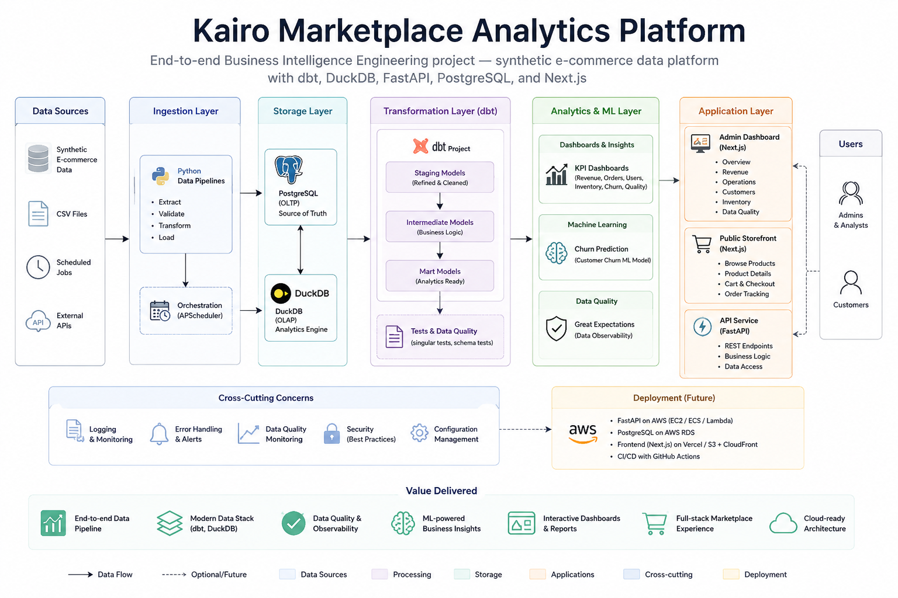
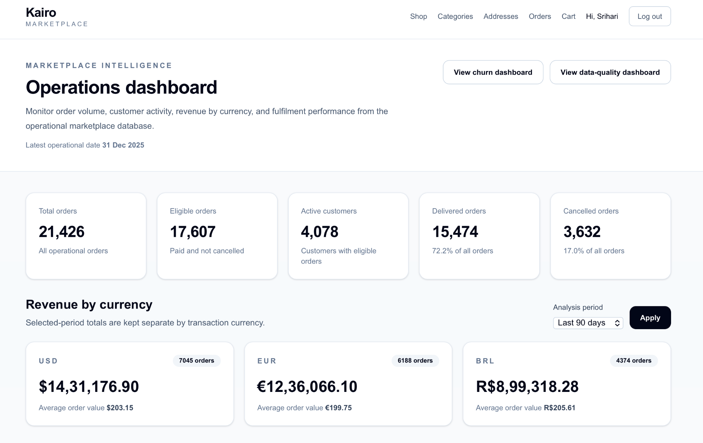
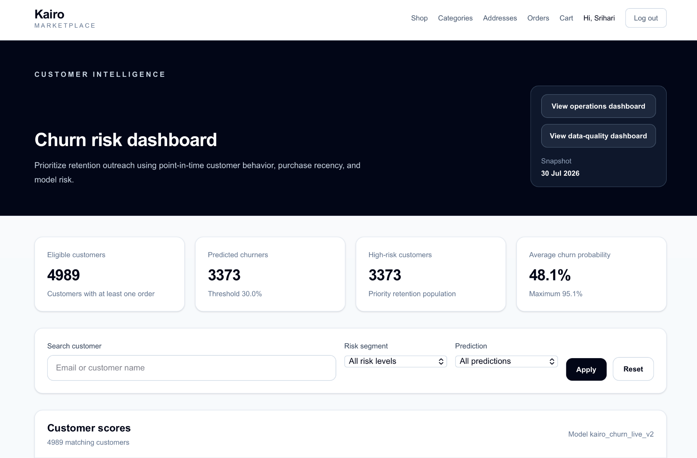
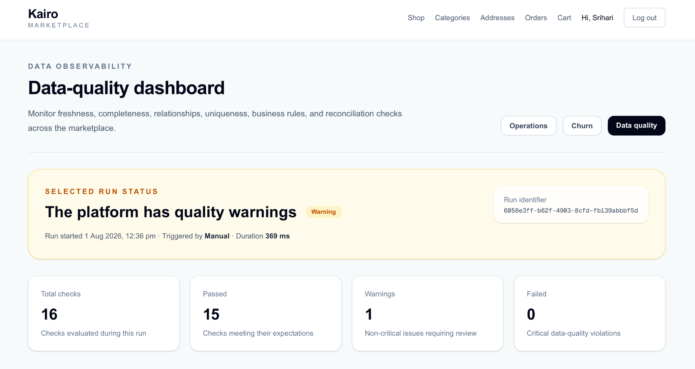
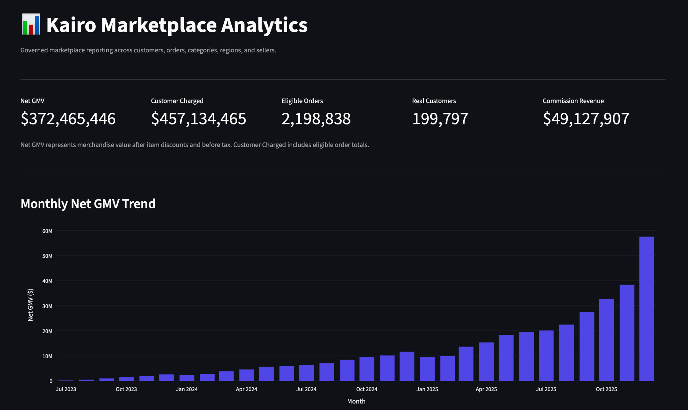
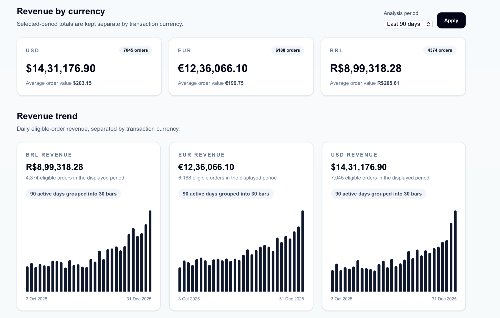
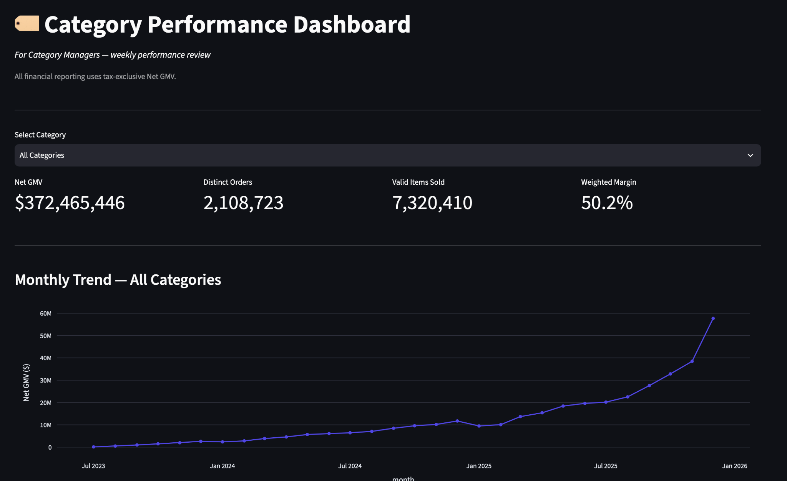
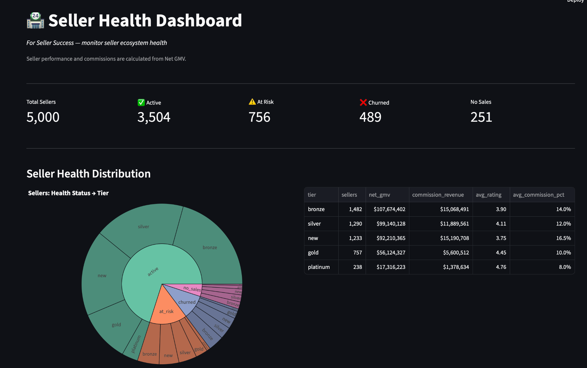
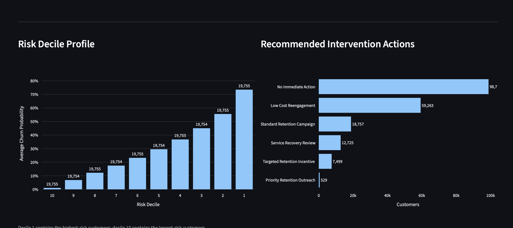
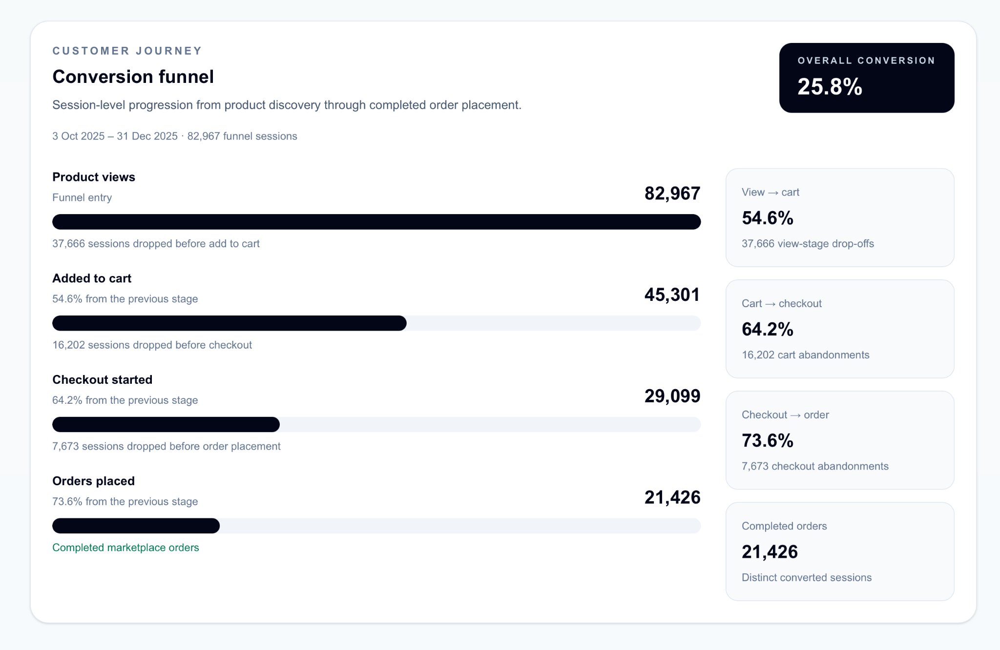
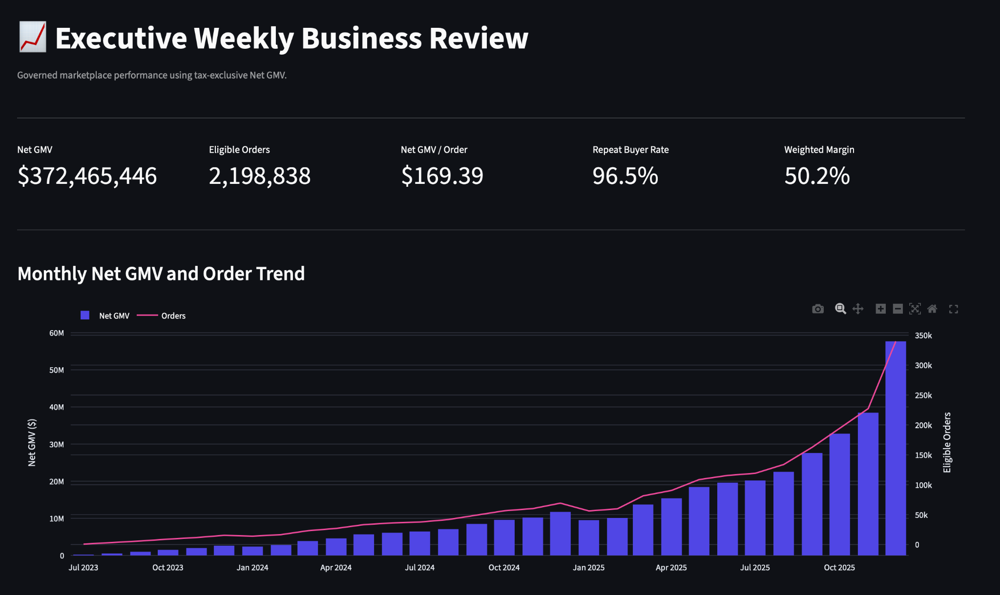
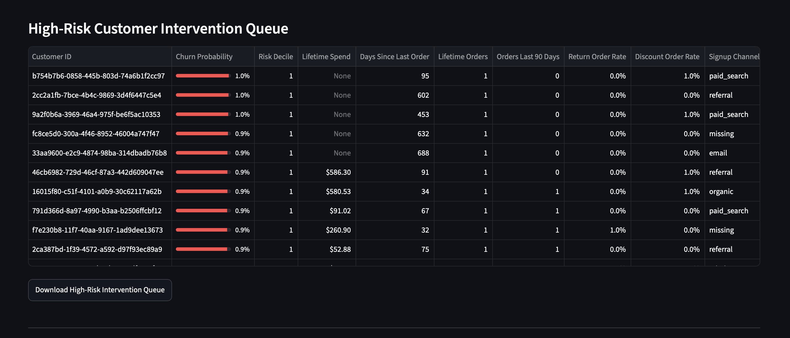
Every layer, chosen on purpose
Nothing here is fashionable-for-fashionable's-sake. Each choice maps to a real constraint: DuckDB because local-first, dbt because testable SQL, FastAPI because Python-native + automatic OpenAPI, Next.js because modern React without plumbing.
📁 Repository Shape
Run the whole thing locally in 5 minutes
One docker compose up brings up Postgres + FastAPI. Three commands bring up the storefront. The full analytical pipeline is scripted from raw generation to reconciled dashboards.